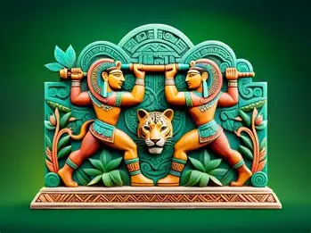

CREENCIAS ANCESTRALES
Dioses y mitología maya
Conoce las deidades y relatos que formaron parte de la cosmovisión maya.

La cosmovisión maya
La religión maya estaba relacionada con la naturaleza, los ciclos agrícolas, los astros y la vida cotidiana. Sus creencias se expresaban mediante ceremonias, relatos, símbolos y representaciones artísticas.
Deidades y relatos importantes

Kukulcán
La serpiente emplumada, una figura importante en distintas tradiciones mesoamericanas.

Chaac
Deidad asociada con la lluvia y vinculada con la agricultura.

Popol Vuh
Obra fundamental de la tradición k'iche' que contiene relatos sobre la creación y los héroes gemelos.